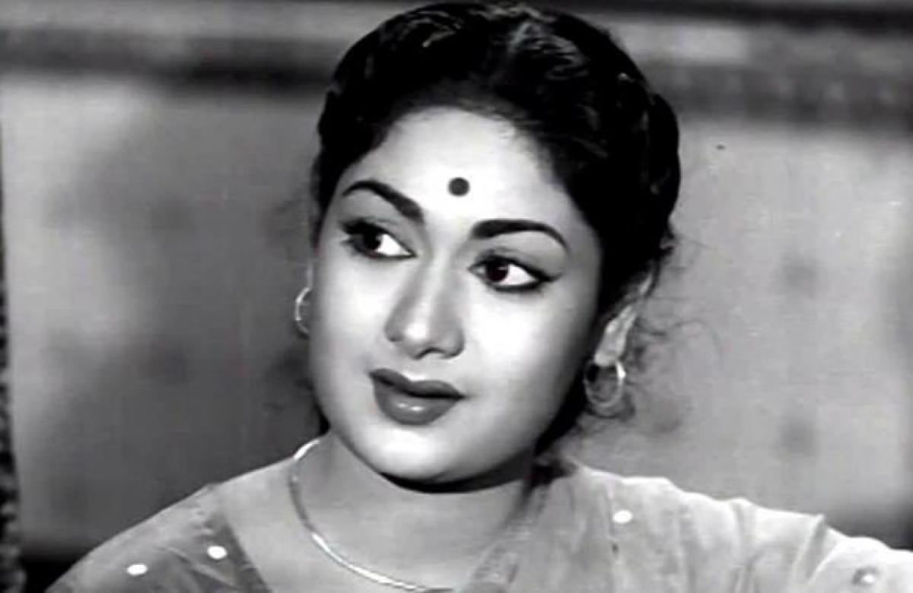

Savitri was a race car enthusiast and at one point had the highest collection of vintage cars in Chennai. 1935-1981

Biography
Savitri Ganesan (born Nissankara Savitri; 6 December 1935 – 26 December 1981) was an Indian actress, playback singer, dancer, director, and producer known for her works primarily in Tamil and Telugu cinema. She had also worked in Kannada, Hindi and Malayalam films. She starred in more than 250 films over three decades. She was one of the highest-paid and most popular Indian actresses from the 1950s to early 70s, and is known by the epithets Mahanati (transl. The great actress) and Nadigaiyar Thilagam (transl. Doyen of all the actresses).